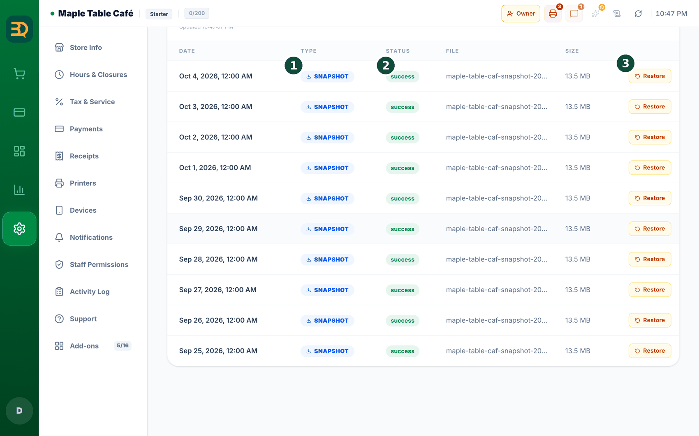

20Backups
A backup is a spare copy of all your shop's information. BrewDesk can save one to your own Google Drive, so your data is always safe.

- Go to Settings and find the backup page.
- Tap Connect Google Drive and sign in to your Google account.
- That's it. From now on, BrewDesk saves a fresh backup on its own, again and again.

- Ever need an old copy back? Tap Restore and pick a backup.
Google Drive is a free online place to keep files. The backup goes into your own Drive, so only you can see it.
Related topics
Need more help?
You can send a support ticket from the app under Settings › Support.